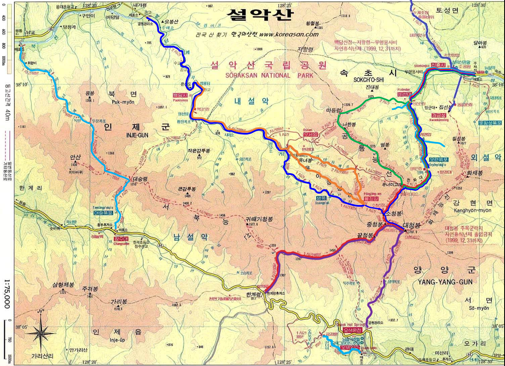

설악산(雪嶽山, 1708m)

| 2013년 10월 09일 |
설악동, 흔들바위, 계조암, 울산바위, 권금성, 대명 델피노 4.5km, 3시간 30분 |
| 10월 10일 | 일출, 고성군 천간정 |
| 2017년 10월 28일 |
오색약수 별님이네 민박 |
| 10월 29일 | 한계령, 서북능선, 중청봉, 대청봉 일몰, 중청대피소 |
| 10월 30일 | 대청봉 일출, 희운각, 천불동계곡, 설악동 |
설악산
우리나라에서 한라산과 지리산 다음으로 높은 산이다. 우리나라 최고의 경치를 보여 주는 산으로, 하늘을 떠받드는 듯한 봉우리, 골짜기마다 걸린 수많은 폭포, 거울보다도 맑은 연못 등이 함께 어우러져 절경을 이룬다. <동국여지승람>에는 ‘한가위부터 내리기 시작해 쌓인 눈이 하지에 이르러 비로소 녹으므로 설악(雪嶽)이라 한다’고 기록하고 있다. <증보문헌비고>는 ‘산마루에 오래도록 눈이 쌓여 바위가 눈 같이 희다고 하여 설악이라고 이름지었다’로 돼 있다. <신증동국여지승람>엔 ‘(양양) 서북쪽 50리에 있는 진산(설악산)이며, 매우 가파르다. (음력) 8월에 눈이 내리기 시작하며, 여름이 되어야 녹는 까닭으로 이렇게 이름지었다’고 설명하고 있다.
대청봉
조선시대에는 본래 그냥 청봉(靑峰)이라 불렸던 봉우리다. 조선 정조 때 실학자 성해응(成海應)이 편찬한 <동국명산기>에 따르면, ‘그 봉우리가 높아서, 높고 푸른 하늘을 만질 듯하고, 멀리서 보면 단지 아득하고 푸르기만 하므로 그 최고 정상을 가리켜 청봉이라 이름하였다’고 적고 있다. 또 봉우리의 모습을 ‘둥글둥글하면서 가파르지 않고, 높으면서도 깎아지른 듯 험준하지 않고, 우뚝 솟아 서 있는 것이 마치 큰 거인 같다’고 기록했다.설악산은 정상 대청봉과 함께 중청․소청․끝청봉, 그리고 귀때기청봉과 더불어 모두 대청봉과 유사한 면이 있다고 해서 청봉이란 이름을 붙여 사용하고 있다.
귀떼기청봉은 서북주능선상에 위치한 봉우리다. 일화에 따르면, 자기가 제일 높다고 으스대다가 대청봉․중청봉․소청봉 삼형제에게 귀싸대기를 맞아 귀떼기청봉이라 이름 붙여졌다고 전한다. - 마운틴 by pichy91


느낀 점, 배운 것 (한계령-대청-설악동)
- 대청봉 일출을 보다니... 감개 무량하다.
- 대청봉의 일몰과 일출을 모두 본 것은 재밌는 경험이었다.
- 오색약수의 수 많은 산채비빔밥 중에 분명 맛있는 집과 별로인 집이 있다. 아쉽게도 맛있는 집 상호가 기억 안난다.
- 소운이의 체력에 감탄할 뿐이다. 다음엔 소운이를 앞세워 공룡능선, 천화대 한 번 등반하리라! ^^
- 화채봉을 못 간 것은 많이 아쉽다. 다음에 또 기회를 만들어야겠다.
- 대피소에서는 11시 이후에 잠들자. 일찍 자다 깨서 별 보며 밤을 지새웠다.
- 희운각~설악동 구간은 정말 길다. 천불동 계곡의 절경에도 불구하고 몸이 피곤한 상태에서 끊이 없이 이어지는 철제 난간과 계단은 너무 지루하다.
느낀 점, 배운 것 (울산바위, 권금성)
- 옛날의 울산바위 직각 철제 사다리는 모두 철거되었고, 적당한 경사의 넓은 계단길이 만들어졌다.
- 사다리에 비해 위험은 많이 줄었지만, 끊임 없이 이어지는 계단이 만만치는 않다.
- 울산바위, 권금성 모두 조망이 멋지다.